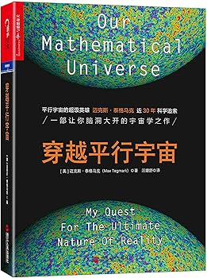

📖《穿越平行宇宙》是MIT物理学家Max Tegmark的科普力作。书中提出了令人震撼的"数学宇宙假说"：宇宙的本质就是数学结构，我们的物理世界只是数学的一种表现形式。
从量子力学的多世界诠释到宇宙学的多重宇宙，Tegmark带领读者一步步探索现实的终极本质。
这本书的最大震撼在于它的终极命题：如果宇宙的本质就是数学，那么所有的物理定律不过是数学定理的必然结果。这个观点听起来疯狂，但Tegmark用严密的逻辑论证了它的合理性——数学才是真正的宇宙通用语言。
书中介绍了四层多重宇宙的概念：从我们宇宙中不可观测的区域，到其他泡泡宇宙，到量子力学的平行世界，最后到数学结构本身构成的多重宇宙。每一层都让人对"现实"的定义产生新的思考。读完这本书，你会对"存在"有全新的理解。数学不再是描述宇宙的工具，而是宇宙本身。